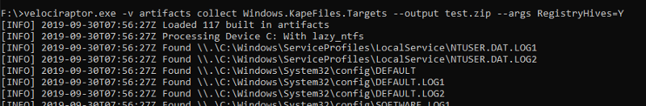
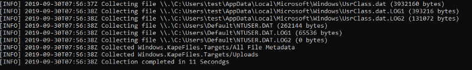
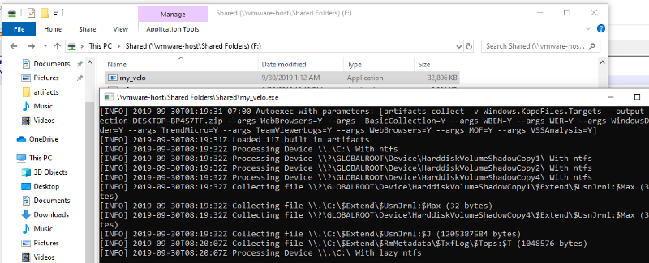

In the previous part of this series of articles we saw how Velociraptor can be used to automatically collect and preserve files from a remote system. This is great if you have Velociraptor installed as an agent on the endpoint — but what if you (or your customer) does not?
Velociraptor is essentially a query engine. All its operations are controlled by VQL queries normally encapsulated in a YAML files called artifacts. As such it does not really need a server to operate. It is possible to collect those same artifacts interactively on the command line (In this example we collect the KapeFiles artifact as we did in the last part but you can collect any Velociraptor artifact this way):
F:> velociraptor.exe -v artifacts collect Windows.KapeFiles.Targets --output test.zip --args RegistryHives=Y
Invoking Velociraptor with the “artifacts collect” command specifies that we should collect the artifact interactively. If we also specify the “ — output” flag we will collect the result into the zip file. We can then specify any argument to the artifact using the “— args” flag (which may be specified more than once). If you can not remember which args the artifact takes then simple provide and incorrect arg for Velociraptor to tell you.
The example above simply collects all registry hives on the system (Registry hives are typically locked but Velociraptor uses raw NTFS parsing to extract the files from the filesystem — thus bypassing all locks).
 
Sometimes in our DFIR work we need to rely on other’s help — sometimes a system administrator or even an end user with limited command line skills. It is unreasonable to expect all our helpers to be able to type the above command line. We need to make it as easy as possible for our accomplices.
Velociraptor features a method for packing a configuration file within the binary itself. We can use this feature to have Velociraptor automatically execute the correct artifact collection when started without any parameters (or double clicked).
Simply create a configuration file with an autoexec field containing all the command line args (let’s call it myconfig.yaml):
autoexec:
argv: \["artifacts", "collect", "-v", "Windows.KapeFiles.Targets",
"--output", "collection\_$COMPUTERNAME.zip",
"--args", "WebBrowsers=Y",
"--args", "\_BasicCollection=Y",
"--args", "WBEM=Y",
"--args", "WER=Y",
"--args", "WindowsDefender=Y",
"--args", "TrendMicro=Y",
"--args", "TeamViewerLogs=Y",
"--args", "WebBrowsers=Y",
"--args", "MOF=Y",
"--args", "VSSAnalysis=Y"\]
Note that this config file invokes Velociraptor with a list of KapeFiles targets and instructs the result to be saved to a zip file named after the computer name.
Next we simply repack the binary — this effectively copies the config file inside the binary so when the new binary restarts, it automatically loads this config file (and therefore runs the instructions above):
F:> velociraptor.exe config repack myconfig.yaml my\_velo.exe
This will produce a new binary with our config embedded in it. Now when this binary is run it will immediately begin to collect the targets listed. Note that the collector needs to run as an administrator so typically the user will need to right click, select “Run As Administrator” and click through the UAC dialog:

When complete Velociraptor will leave behind the zip file with all the files in it — ready for sharing with the investigator.
All we need to do now is send our trusted user the repacked binary and instruct them to right click on it and run as administrator. The collected zip file can be large (several Gb) and the user would need to somehow transport the file to us. One way is for us to set up a public writable share and have the file written automatically via a UNC path. This method only works when users are on the corporate LAN and have access to the domain and the file share. Otherwise the user may upload the file manually for us.
In the next part we will see how to write the collected zip file to a cloud server instead so they can automatically upload the collected files from any internet connected network.